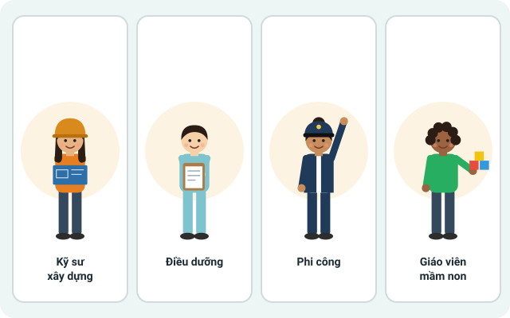
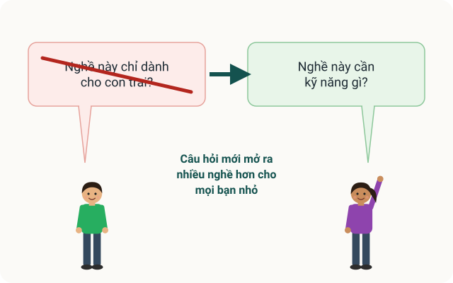
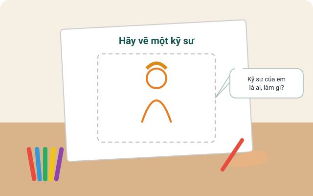

K7 · Tự học và phát triển nghề nghiệp › Bậc 1 Làm quen
Ai cũng có thể làm nghề này
Dành cho người lớn. Định kiến giới về nghề là suy nghĩ rằng một nghề chỉ hợp với con trai, hoặc chỉ hợp với con gái.
- Vì sao học sớm: Khảo sát Drawing the Future (2018) cho trẻ 7–11 tuổi vẽ nghề mình muốn làm. Báo cáo ghi nhận lựa chọn của trẻ thường đi theo định kiến giới. Báo cáo Dream Jobs? của OECD (2020), dùng dữ liệu PISA 2018, cũng thấy giới tính vẫn ảnh hưởng mạnh đến nghề học sinh 15 tuổi mong muốn.
- Chuẩn bị: giấy trắng, bút chì màu, đồng hồ bấm giờ.
- Lưu ý: trẻ học nhiều từ câu nói đùa của người lớn. Tránh những câu như "con gái mà đòi làm kỹ sư".
- Quyền bình đẳng tại nơi làm việc của người lớn được bàn ở trachnhiemxahoi.com. Bài này chỉ dừng ở mức khám phá nghề.
1. Mục tiêu
- Nhận ra một câu nói định kiến giới về nghề.
- Đổi câu đó thành câu hỏi: "Nghề này cần kỹ năng gì?"
2. Khởi động truy xuất
- Em kể 3 trong 6 kỹ năng mà nghề nào cũng cần.
- Ô thứ 5 của Thẻ nghề hỏi điều gì?
Đáp án
- Lắng nghe, nói rõ, gỡ khó, làm cùng nhau, giữ hẹn, dùng công nghệ.
- "Cần kỹ năng gì?"
Xem lại: Nghề nào cũng cần kỹ năng.
3. Giải thích
Có thể em đã nghe những câu như: "Con trai mới làm kỹ sư." Hay: "Con gái mới làm cô nuôi dạy trẻ." Những câu này gọi là định kiến giới về nghề.
Định kiến là một suy nghĩ quen thuộc nhưng chưa được kiểm chứng. Nhiều người nói theo vì nghe quen, không phải vì nó đúng.
Ở Bài 2, em đã biết: nghề cần kỹ năng và kiến thức. Kỹ sư xây dựng cần tính toán cẩn thận và làm việc nhóm. Giáo viên mầm non cần lắng nghe trẻ và nói rõ. Ai học và luyện được những điều đó đều có thể làm nghề.

Định kiến làm hẹp lựa chọn. Nếu tin một nghề "không dành cho mình", em có thể bỏ qua một nghề hợp với em. Bạn bè em cũng vậy.
Cách hay nhất là đổi câu nói thành câu hỏi:
Đổi câu định kiến thành câu hỏi
- "Con gái không làm thợ điện được."
- "Con trai mà làm điều dưỡng à?"
- "Nghề này là của con trai."
- "Thợ điện cần kỹ năng gì?"
- "Điều dưỡng làm những việc gì?"
- "Em có muốn tìm hiểu nghề này không?"

4. Ví dụ tại nơi làm việc Việt Nam
Tình huống giả định. Trong giờ Hoạt động trải nghiệm, lớp 3A vẽ "một kỹ sư". Bạn Bình nói to: "Kỹ sư phải là con trai!"
Cô giáo không chê Bình. Cô dùng 4 bước:
- Dừng lại: "Bình vừa nói một ý. Cả lớp cùng kiểm tra ý đó nhé."
- Hỏi về kỹ năng: "Kỹ sư xây dựng làm gì? Cần kỹ năng gì?" Lớp trả lời: tính toán, vẽ, làm nhóm.
- Tìm ví dụ thật: cô cho xem ảnh các kỹ sư nam và nữ đang làm việc, trong sách và báo.
- Nói câu mới: cả lớp nói: "Ai giỏi tính toán và làm nhóm tốt đều có thể làm kỹ sư."
4 bước khi nghe một câu định kiến
- Dừng lạiĐừng vội đồng ý hay cãi nhau.
- Hỏi về kỹ năng"Nghề này cần kỹ năng gì?"
- Tìm ví dụ thậtNhờ người lớn tìm người thật làm nghề đó.
- Nói câu mới"Ai luyện được kỹ năng đó đều có thể làm."
Vì sao cách này tốt: cô không mắng, cũng không giảng dài. Cô giúp lớp tự kiểm tra một ý bằng câu hỏi và bằng ví dụ thật.
5. Thực hành
Trò chơi "Vẽ nhanh một người làm nghề". Người lớn đọc tên 4 nghề: lính cứu hỏa, điều dưỡng, phi công, đầu bếp. Mỗi nghề, em vẽ nhanh trong 1 phút.

Vẽ xong, em trả lời:
- Em vẽ người làm nghề là nam hay nữ?
- Chọn một tranh. Vẽ lại nghề đó với một người khác giới.
- Đổi 2 câu sau thành câu hỏi về kỹ năng: "Con gái không lái xe tải được." và "Con trai không làm cô nuôi dạy trẻ."
Gợi ý
Dùng mẫu câu: "Nghề … cần kỹ năng gì?" hoặc "Nghề … làm những việc gì?"
Lời giải mẫu
- và 2. Không có đúng sai. Mục đích là nhận ra hình ảnh "quen" trong đầu mình.
- "Lái xe tải cần kỹ năng gì?" và "Giáo viên mầm non làm những việc gì?"
6. Tự kiểm tra
Chọn đáp án. Mỗi lựa chọn đều có giải thích.
Câu 1. Câu nào là định kiến giới về nghề?
-
Chưa đúng. Đây là nói về kiến thức nghề cần, không chia theo nam nữ.
-
Đúng. Đúng. Câu này gán nghề cho một giới mà không dựa trên kỹ năng.
-
Chưa đúng. Đây là nói về nơi làm việc, không phải định kiến.
Câu 2. Bạn em nói: "Con trai mà làm cô nuôi dạy trẻ à?" Em đổi thành câu hỏi nào?
-
Đúng. Đúng. Câu hỏi về kỹ năng mở ra nghề cho mọi người.
-
Chưa đúng. Câu này lặp lại định kiến, chưa kiểm tra xem có đúng không.
-
Chưa đúng. Im lặng không giúp bạn hiểu thêm về nghề.
Câu 3. Vì sao định kiến về nghề có hại?
-
Chưa đúng. Định kiến không làm thay đổi nghề, mà thay đổi suy nghĩ của người chọn.
-
Đúng. Đúng. Định kiến làm hẹp lựa chọn từ khi còn nhỏ.
-
Chưa đúng. Nghiên cứu cho thấy định kiến giới ảnh hưởng đến nghề trẻ em mơ ước.
Câu 4. Ôn Bài 2. Đâu là kỹ năng mà nghề nào cũng cần?
-
Đúng. Đúng. Nghề nào cũng cần nghe đúng điều người khác cần.
-
Chưa đúng. Đây là kiến thức riêng của nghề phi công.
-
Chưa đúng. Đây là kiến thức riêng của thợ cắt tóc.
7. Phản tư
Người lớn hỏi, em trả lời bằng lời. Site không lưu gì.
- Có nghề nào em từng nghĩ "không dành cho mình"? Vì sao em nghĩ vậy?
- Nếu bạn em bị trêu vì thích một nghề, em có thể nói câu gì?
8. Áp dụng thật
Trong 7 ngày tới, cùng người lớn tìm 2 ví dụ thật: người làm một nghề khác với suy nghĩ quen. Có thể là người quen, hoặc người trong sách, báo. Làm Thẻ nghề cho nghề đó. Không cần ghi tên người.
Nối kiến thức. Chìa khóa của bài này nằm ở Bài 2: nghề cần kỹ năng. Ở Bài 6, khi phỏng vấn, em có thể hỏi thêm một câu. "Nghề của cô (chú) có cả nam và nữ làm không?" Ở Bài 4, em sẽ chia việc nhóm theo khả năng, không theo con trai hay con gái.
Thái độ tôn trọng sự khác biệt, như một phẩm chất, được bàn ở daynentang.com.
9. Siêu dữ liệu
| skill | K7 · Tự học và phát triển nghề nghiệp |
|---|---|
| level | Bậc 1 · Làm quen |
| group | N1 |
| framework_map | WEF: Curiosity and lifelong learning; CSfW: 1a Manage career and work life; 2c Recognise and utilise diverse perspectives; NACE: Career and Self-Development; Equity and Inclusion; LifeComp: L3 Managing learning (chỉ dẫn chiếu) |
| updated | 2026-11-14 |
Hoàn thành bài
Đánh dấu đã học để site gợi ý lịch ôn sau 1, 3 và 7 ngày. Dữ liệu chỉ lưu trên máy của bạn.
Lịch ôn gợi ý: